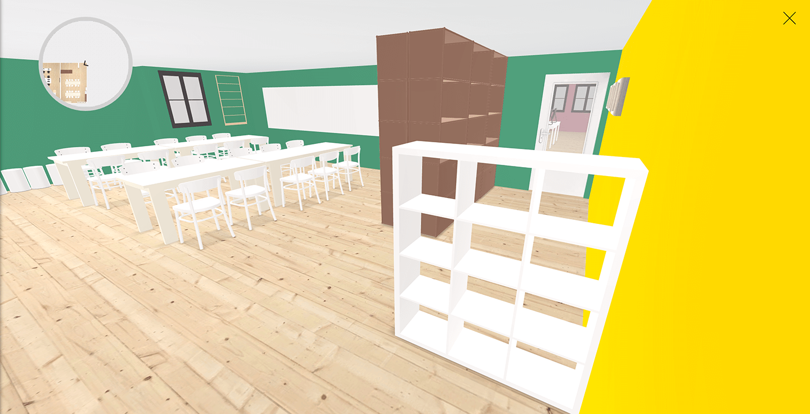
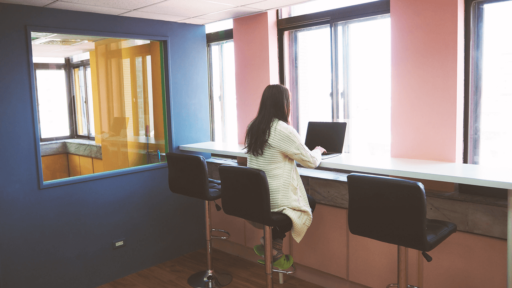
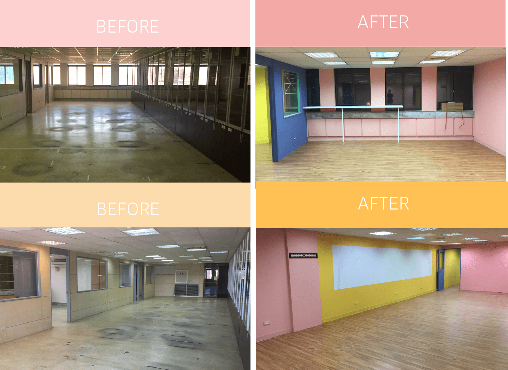

上班原來也可以像是回到家
好的工作環境，能激發無限創意、能刺激分享、能夠孕育出一群同甘共苦的夥伴，我們共享、共創、共樂，把這樣的理念在辦公室每一隅都堅持實現。
從平面設計圖開始，設計團隊絞盡腦汁，考慮整體空間配置，排列出大小會議室、休閒空間及工作區域。
牆面顏色、傢俱配置、地板材質都不假他人之手，由設計團隊一手包辦

究竟能否符合企業形象及大家期待呢？
走！就讓小編帶你一窺這如夢似幻般的辦公室吧！
來到悠夏爾科技公司門前，一整面木質感的招牌與整片透明的玻璃大門，並且一眼盡收繽紛的彩漆與可愛的玄關，一覽無遺，這些都是我們的設計團隊，希望讓遠來洽公的客戶，都能感受到一種 Open Arm 的美式作風，像是主人賓帶著雀躍的笑容歡迎各位訪客！當然，另一方面，考量風水上對於門戶相沖的禁忌，這樣的玄關設計既務實又兼具美觀。
設計團隊一開始考量了多種風格，工業風、無印簡約等等，最後決定走幼兒園style(誤)，延續充滿活力熱忱的公司文化，大膽使用了四種相異的色彩搭配在不同的牆面上，讓來到辦公室的夥伴和訪客們，都能感受到一種活潑、好心情的氛圍。
設計團隊對於會議室與主辦公室，秉持著開放式的設計，設立便於討論的會議空間，也將主辦公室的隔板打破，讓人與人之間溝通變得更直接，更能高效率地溝通與協同工作，把整個團隊氛圍更添積極與活力！
再往辦公間裡面走。還記得「再忙，都要跟你喝杯咖啡」嗎？廣告裡的正咩總是坐在美麗的高腳椅上，面對著城市的風景，原來工作台也可以很詩情畫意，帶著另一種從容更能激發出無限的靈感，也許下一秒，一束銀河般的星河乍現，你文思枯竭的工作已被溢滿！

一處可以轉換心情、療癒身心的沙發區，是設計團隊特別為緊繃、糾結、卡關的工作者，安排的靈感溫室，也特別選用藍色，一種沈鬱卻能讓人靜下心的色調，就像回家一樣，陷在舒適的沙發上，許多不解都有解了！

讓我們來看看設計團隊到底施了什麼魔法，讓施工前後造成超強大的落差

還有更多巧思藏在辦公室的小地方，例如會議室與主辦公室都採取 Apple TV 無線投影的方式，每一個人在辦公室任何一處，都能發送投影訊號，通知大家”我想分享喔”，讓共享無分界、無阻礙、無限延伸！
We work smart.
We bulid great websites.
我們是 悠夏爾科技